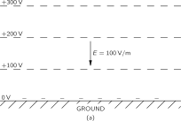
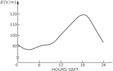
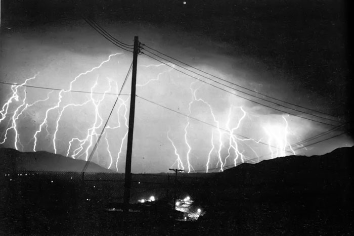
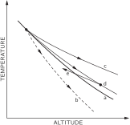
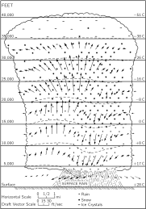
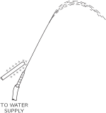
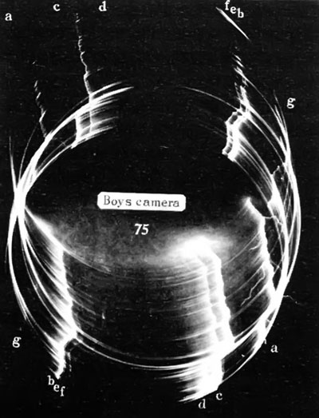
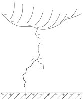

Материалы главы
Сгенерированные учебные материалы NotebookLM для этой главы.
Глава 9. Электричество в атмоскере
9–1 Градиент электрического потенциала в атмосфере#
В обычный день над пустынной равниной или над морем электрический потенциал по мере подъема возрастает с каждым метром примерно на 100 в. В воздухе имеется вертикальное электрическое поле E величиной \mathbf{E} 100 в/м. Знак поля отвечает отрицательному заряду земной поверхности. Это означает, что на улице потенциал на уровне вашего носа на 200 в выше, чем потенциал на уровне пяток! Можно, конечно, спросить: «Почему бы не поставить пару электродов на воздухе в метре друг от друга и не использовать эти 100 в для электрического освещения?» А можно и удивиться: «Если действительно между моим носом и моей пяткой имеется напряжение 200 в, то почему же меня не ударяет током, как только я выхожу на улицу?»
Сперва ответим на второй вопрос. Ваше тело — довольно хороший проводник. Когда вы стоите на земле, вы вместе с нею образуете эквипотенциальную поверхность. Обычно эквипотенциальные поверхности параллельны земле (фиг. 9.1,а), но когда на земле оказываетесь вы, то они смещаются, и поле начинает выглядеть примерно так, как показано на фиг. 9.1,б. Так что разность потенциалов между вашей макушкой и пятками почти равна нулю. С земли на вашу голову переходят заряды и изменяют поле вокруг вас. Часть из них разряжается ионами воздуха, но ионный ток очень мал, ведь воздух плохой проводник.

Как же измерить такое поле, раз оно искажается от всего, что в него попадает? Имеется несколько способов. Один способ — расположить изолированный проводник на какой-то высоте над землей и не трогать его до тех пор, пока он не приобретет потенциал воздуха. Если подождать довольно долго, то даже при очень малой проводимости воздуха заряды стекут с проводника (или натекут на него), уравняв его потенциал с потенциалом воздуха на этом уровне. Тогда мы можем опустить его к земле и измерить изменение его потенциала. Другой более быстрый способ — в качестве проводника взять ведерко воды, в котором имеется небольшая течь. Вытекая, вода уносит излишек заряда, и ведерко быстро приобретает потенциал воздуха. (Заряды, как вы знаете, растекаются по поверхности, а капли воды — это уходящие «куски поверхности».) Потенциал ведра можно измерить электрометром.

Имеется еще способ прямого измерения градиента потенциала. Раз существует электрическое поле, то должен быть и поверхностный заряд на земле ( \sigma=\epsilon_0 E). Если мы поместим у поверхности земли плоскую металлическую пластинку и заземлим ее, то на ней появятся отрицательные заряды (фиг. 9.2, а). Если затем прикрыть пластинку другой заземленной проводящей крышкой B, то заряды появятся уже на крышке, а на пластинке A их не будет. Если мы измерим заряд, перетекающий с пластинки A на землю (скажем, с помощью гальванометра в цепи заземляющего провода) в тот момент, когда ее закрывают крышкой, то мы найдем плотность поверхностного заряда, бывшего на ней, а значит, и электрическое поле.
Рассмотрев способы измерения электрического поля в атмосфере, продолжим теперь его описание. Измерения прежде всего показывают, что с увеличением высоты поле продолжает существовать, только становится слабее. На высоте примерно 50 км поле уже еле-еле заметно, так что большая часть изменения потенциала (интеграла от E) приходится на малые высоты. Вся разность потенциалов между поверхностью земли и верхом атмосферы равна почти 400{,}000 в.
9–2 Электрические токи в атмосфере#
Помимо градиента потенциала, можно измерять и другую величину — ток в атмосфере. Плотность его мала: через каждый квадратный метр, параллельный земной поверхности, проходит около 10 мка. Воздух, по-видимому, не идеальный изолятор; из-за этой проводимости от неба к земле все время течет слабый ток, вызываемый описанным нами электрическим полем.
Почему атмосфера имеет проводимость? Потому что в ней среди молекул воздуха попадаются ионы, например, молекулы кислорода, порой снабженные лишним электроном, а порой лишенные одного из своих. Эти ионы не остаются одинокими; благодаря своему электрическому полю они обычно собирают близ себя другие молекулы. Каждый ион тогда становится маленьким комочком, который вместе с другими такими же комочками дрейфует в поле, медленно двигаясь вверх или вниз, создавая наблюдаемый ток. Откуда же берутся ионы? Сперва думали, что ионы создают радиоактивность Земли. (Было известно, что излучение радиоактивных веществ делает воздух проводящим, ионизуя молекулы воздуха.) Частицы, скажем \beta -лучи, выходящие из атомных ядер, движутся так быстро, что они вырывают электроны у атомов, оставляя за собой дорожку из ионов. Такой взгляд, конечно, предполагает, что на больших высотах ионизация должна была бы становиться меньше, потому что вся радиоактивность — все следы радия, урана, калия и т. д. — находится в земной пыли.
Чтобы проверить эту теорию, физики поднимались на воздушных шарах и измеряли ионизацию (Гесс, в 1912 г.). Выяснилось, что все происходит как раз наоборот — ионизация на единицу объема с высотой растет! (Прибор был похож на изображенный на фиг. 9.3. Две пластины периодически заряжались до потенциала V. Вследствие проводимости воздуха они медленно разряжались; быстрота разрядки измерялась электрометром.) Этот непонятный результат был самым потрясающим открытием во всей истории атмосферного электричества. Открытие было столь важно, что потребовало выделения новой отрасли науки — физики космических лучей. А само атмосферное электричество осталось среди явлений менее удивительных. Ионизация, видимо, порождалась чем-то вне Земли; поиски этого неземного источника привели к открытию космических лучей. Мы не будем сейчас говорить о них и только скажем, что именно они поддерживают снабжение воздуха ионами. Хотя ионы постоянно уносятся, космические частицы, врываясь из мирового пространства, то и дело сотворяют новые ионы.
Чтобы быть точными, мы должны отметить, что, кроме ионов, составленных из молекул, бывают и другие сорта ионов. Мельчайшие комочки почвы, подобно чрезвычайно тонким частичкам пыли, плавают в воздухе и заряжаются. Их иногда называют «ядрами». Скажем, когда в море плещутся волны, мелкие брызги взлетают в воздух. Когда такая капелька испарится, в воздухе остается плавать маленький кристаллик NaCl. Затем эти кристаллики могут привлечь к себе заряды и стать ионами; их называют «большими ионами».
Малые ионы, т. е. те, которые создаются космическими лучами, самые подвижные. Из-за того, что они очень малы, они быстро проносятся по воздуху, со скоростью около 1 см/сек в поле 100 в/м, или 1 в/см. Большие и тяжелые ионы движутся куда медленнее. Оказывается, что если «ядер» много, то они перехватывают заряды от малых ионов. Тогда, по скольку «большие ионы» движутся в поле очень медленно, общая проводимость уменьшается. Поэтому проводимость воздуха весьма переменчива — она очень чувствительна к его «засоренности». Над сушей этого «сора» много больше, чем над морем, — там ветер подымает с земли пыль, да и человек тоже всячески загрязняет воздух. Нет ничего удивительного в том, что день ото дня, от момента к моменту, от одного места к другому проводимость близ земной поверхности значительно меняется. Электрическое поле в каждой точке над земной поверхностью тоже меняется, потому что ток, текущий сверху вниз, в разных местах примерно одинаков, а изменения проводимости у земной поверхности приводят к вариациям поля.
Проводимость воздуха, возникающая в результате дрейфа ионов, также быстро увеличивается с высотой. Происходит это по двум причинам. Во-первых, с высотой растет ионизация воздуха космическими лучами. Во-вторых, по мере падения плотности воздуха увеличивается свободный пробег ионов, так что до столкновения им удается дальше пройти в электрическом поле. В итоге на высоте проводимость резко подскакивает.
Хотя плотность электрического тока в воздухе составляет всего несколько микромикроампер на квадратный метр, таких квадратных метров на земной поверхности очень много. Общий электрический ток, достигающий земной поверхности в любой момент времени, примерно постоянен и равен 1800 а. Этот ток, разумеется, «положителен» — он переносит к Земле положительный заряд. Итак, у нас есть источник напряжения в 400{,}000 в с током 1800 а — мощность 700 МВт, то есть 700 МВт!
При таком сильном токе отрицательный заряд Земли должен был бы вскоре исчезнуть. Фактически понадобилось бы только около получаса, чтобы разрядить всю Землю. Но с момента открытия в атмосфере электрического поля прошло куда больше получаса. Как же оно держится? Чем поддерживается напряжение? И между чем и чем оно? Таких вопросов множество.

Земля заряжена отрицательно, а потенциал в воздухе положителен. Если подняться достаточно высоко, проводимость становится настолько большой, что горизонтальные изменения напряжения больше невозможны. Воздух на тех временных масштабах, о которых мы говорим, фактически становится проводником. Это происходит на высоте около 50 километров. Это не так высоко, как так называемая «ионосфера», в которой образуется очень большое количество ионов за счет фотоэффекта от солнечных лучей. Тем не менее, для наших целей можно, обсуждая свойства атмосферного электричества, считать, что на высоте примерно 50 км воздух становится достаточно проводящим, и там существует практически проводящая сфера, из которой вытекают вниз токи. Положение дел изображено на фиг. 9.4. Вопрос в том, как держится там положительный заряд? Как он накачивается обратно? Раз он стекает на Землю, то должен же он как-то перекачиваться обратно? Долгое время это было одной из главных загадок атмосферного электричества.

Каждая частица информации, которую мы получаем, дает нам ключ или, по крайней мере, говорит о чем-то. Вот любопытное явление: если мы будем измерять ток (который более стабилен, чем градиент потенциала) над океаном или в других тщательно контролируемых условиях и усредним результаты, чтобы исключить случайные колебания, мы обнаружим, что суточная вариация все же существует. Усредненные данные многих измерений над океанами показывают вариации со временем, примерно представленные на фиг. 9.5. Ток изменяется примерно на \pm15 процентов и достигает максимума в 7 часов вечера по лондонскому времени. Самое странное здесь то, что, где бы вы ни измеряли ток — в Атлантическом ли океане, в Тихом ли или в Ледовитом, — его часы пик бывают тогда, когда часы в Лондоне показывают 7 вечера! Повсюду во всем мире ток достигает максимума в 19.00 по лондонскому времени, а минимума — в 4.00 по тому же времени. Иными словами, ток зависит от абсолютного земного времени, а не от местного времени в точке наблюдения. В одном отношении это все же не так уж странно; это вполне сходится с нашим представлением о том, что на самом верху имеется очень большая горизонтальная проводимость, которая и исключает местные изменения разности потенциалов между Землей и верхом. Любые изменения потенциала должны быть всемирными, и так оно и есть. Итак, теперь мы знаем, что напряжение «вверху» с изменением абсолютного земного времени то подымается, то падает на 15 процентов.
9–3 Происхождение токов в атмосфере#
Далее нам предстоит поговорить об источнике больших отрицательных токов, которые должны течь от «верхушки» к поверхности Земли, чтобы поддерживать её отрицательный заряд. Где же те батареи, которые это делают? Такая «батарея» показана на фиг. 9.6. Это гроза и её молнии. Оказывается, вспышки молний не «разряжают» той разности потенциалов, о которой мы говорили (и как могло бы на первый взгляд показаться). Молнии снабжают Землю отрицательным зарядом. Если мы увидали молнию, то можно поспорить на десять против одного, что она привела на Землю большое количество отрицательных зарядов. Именно грозы заряжают Землю в среднем током в 1800 ампер, который затем разряжается в районах с хорошей погодой.

По всему земному шару ежедневно происходит около 40{,}000 гроз, и мы можем рассматривать их как батареи, которые накачивают электричество в верхний слой атмосферы и поддерживают разность потенциалов. Если принять во внимание географию Земли — послеполуденные грозы в Бразилии, тропические грозы в Африке и так далее — и оценить общее число молний, происходящих во всем мире в любой момент времени, то, излишне говорить, эти оценки более или менее согласуются с измерениями разности потенциалов: максимум деятельности гроз на всей Земле приходится на 19.00 по гринвичскому среднему времени. Однако оценки грозовой активности сделать очень трудно, и они были получены только после того, как стало известно, что такие колебания должны существовать. Это очень сложные вещи, потому что у нас недостаточно наблюдений над океанами и над всеми частями света, чтобы точно знать число гроз. Но те, которые думают, что они «все учли правильно», уверяют, что по всему миру происходит около 100 молний в секунду, причем максимум деятельности приходится на 19.00 по гринвичскому среднему времени.
Чтобы понять, как работают эти батареи, мы подробно рассмотрим грозу. Что происходит внутри грозы? Мы опишем это настолько, насколько нам это известно. Погружаясь в это удивительное явление реальной природы — вместо идеализированных сфер идеальных проводников внутри других сфер, которые мы можем так изящно рассчитать, — мы обнаруживаем, что знаем очень мало. И все же это действительно весьма волнующе. Любой, кто был во время грозы, наслаждался ею, или боялся, или, по крайней мере, испытывал какие-то чувства. А там, где в природе появляются чувства, обычно сразу всплывает и сложность природы и ее таинственность. Нет никакой возможности точно описать, как происходит гроза, мы пока мало об этом знаем. Но мы все же попробуем немножко рассказать о том, что происходит.
9–4 Грозы#
Прежде всего, обычная гроза состоит из нескольких «ячеек», расположенных довольно близко друг к другу, но почти независимых одна от другой. Поэтому лучше всего анализировать по одной ячейке за раз. Под «ячейкой» мы понимаем область ограниченной площади в горизонтальном направлении, в которой происходят все основные процессы. Обычно рядом находится несколько ячеек, и в каждой из них происходит примерно одно и то же, хотя, возможно, в разное время. На фиг. 9.7 схематически показано, как выглядит такая ячейка на ранней стадии грозы. Оказывается, в определенном месте в воздухе, при определенных условиях, которые мы опишем, происходит общее поднятие воздуха с возрастающими скоростями вблизи верхней части. По мере того как теплый влажный воздух внизу поднимается, он охлаждается, и содержащийся в нем водяной пар конденсируется. На рисунке маленькие звездочки обозначают снег, а точки — дождь, но из-за того, что восходящие потоки достаточно велики, а капли достаточно малы, на этой стадии снег и дождь вниз не выпадают. Это начальная стадия, еще не настоящая гроза — в том смысле, что у земли ничего не происходит. В то же самое время, когда поднимается теплый воздух, происходит вовлечение воздуха с боков — важный момент, которым в течение многих лет пренебрегали. Таким образом, поднимается не только воздух снизу, но и какое-то количество другого воздуха — с разных сторон.
Почему же воздух поднимается подобным образом? Как вы знаете, с увеличением высоты воздух становится холоднее. Земля нагревается Солнцем, а обратное излучение тепла в небо идет от водяного пара, находящегося высоко в атмосфере; поэтому на больших высотах воздух холодный — очень холодный, — тогда как внизу он теплый. Вы можете сказать: «Тогда все очень просто. Теплый воздух легче холодного, следовательно, такая комбинация механически неустойчива и теплый воздух поднимается». Конечно, если температура различна на разных высотах, то воздух термодинамически неустойчив. Если оставить его в покое на бесконечно долгое время, весь воздух пришел бы к одной и той же температуре. Но он не предоставлен самому себе; весь день светит солнце. Так что проблема касается не только термодинамического, но и механического равновесия. Пусть мы начертили, как на фиг. 9.8, кривую зависимости температуры воздуха от высоты. В обычных условиях получается убывание по кривой типа а; по мере подъема температура падает. Как же атмосфера может быть устойчивой? Почему бы теплому воздуху снизу просто не подняться к холодному? Ответ состоит в том, что если бы воздух начал подниматься, то давление в нем упало бы, и, рассматривая определенную порцию поднимающегося воздуха, мы бы увидели, что она адиабатически расширяется. (Тепло не уходило бы из нее и не приходило бы, потому что из-за огромных размеров не хватило бы времени для больших передач тепла.) Итак, порция воздуха при подъеме охладится. Такой адиабатический процесс привел бы к такой зависимости «температура — высота», как показано кривой b на фиг. 9.8. Любой воздух, поднимающийся снизу, оказался бы холоднее, чем то место, куда он направляется. Так что теплому воздуху снизу нет резона идти вверх; если бы он всплыл, то остыл бы и стал холоднее того воздуха, который уже там есть; он оказался бы тяжелее этого воздуха, и ему бы захотелось сразу обратно вниз. В хороший, ясный денек, когда влажность невелика, устанавливается какая-то быстрота падения температуры с высотой, и эта быстрота, вообще говоря, ниже «максимального устойчивого перепада», представляемого кривой b. Воздух находится в устойчивом механическом равновесии.

Но, с другой стороны, если мы возьмем воздушную ячейку, содержащую много водяных паров, то кривая ее адиабатического охлаждения будет совсем другой. При расширении и охлаждении этой ячейки водяной пар начнет конденсироваться, а при конденсации выделяется тепло. Поэтому влажный воздух остывает не так сильно, как сухой. Значит, когда воздух, влажность которого выше средней, начнет подниматься, его температура будет следовать кривой с на фиг. 9.8. Слегка охлаждаясь при подъеме, он все же окажется теплее окружающего его на этой высоте воздуха. Если имеется область теплого влажного воздуха и он почему-то начинает подниматься, то он все время будет оставаться легче и теплее окружающего воздуха и по-прежнему будет всплывать, пока не достигнет огромных высот. Вот тот механизм, который заставляет воздух в грозовой ячейке подниматься.
В течение многих лет именно так объясняли грозовую ячейку. А затем измерения показали, что температура облака на различных уровнях над Землей не так высока, как это следует из кривой (c). Причина в том, что, когда «пузырь» влажного воздуха всплывает, он уносит с собой воздух из окружающей среды и охлаждается им. Кривая «температура—высота» похожа больше на кривую (d), которая гораздо ближе к первоначальной кривой (a), нежели к (c).

После того как описанная конвекция начинается, поперечное сечение грозовой ячейки выглядит так, как показано на фиг. 9.9. Мы имеем то, что называется «зрелой» грозовой ячейкой. Существует очень быстрое восходящее движение воздуха, которое на этой стадии достигает примерно 10{,}000 — 15{,}000 метров, а иногда и значительно выше. Грозовые облака с их конденсацией громоздятся над всей облачной грядой, увлекаемые восходящим потоком, скорость которого обычно составляет около 60 миль в час. По мере того как водяной пар поднимается и конденсируется, возникают крохотные капельки, которые быстро охлаждаются до температуры ниже нуля. Они должны замерзнуть, но делают это не сразу — они «переохлаждаются». Вода, да и другие жидкости обычно легко охлаждаются ниже своей точки замерзания, не кристаллизуясь, если только вокруг нет «ядер», которые необходимы, чтобы началась кристаллизация. Только если имеются мелкие крошки вещества, наподобие кристалликов NaCl, капельки воды превратятся в льдинки. Тогда равновесие будет приводить к испарению капель и росту кристаллов льда. Итак, в какой-то момент начинается внезапное исчезновение воды и быстрое образование льда. Кроме того, могут происходить прямые соударения водяных капелек и льдинок — столкновения, в которых переохлажденная вода, прикоснувшись к кристаллику льда, мгновенно сама кристаллизуется. Стало быть, в какой-то момент развития облака в нем происходит быстрое накопление крупных частиц льда.
Когда частицы льда становятся достаточно тяжелыми, они начинают падать сквозь восходящий поток воздуха, ибо они стали слишком грузными, чтобы тяга могла их нести. Падая, они увлекут за собой немного воздуха, и начинается противоток — вниз. И легко понять, что, как это ни странно, раз уж противоток начался, то прекратиться он не сможет. Воздух теперь полным ходом помчится вниз!
Посмотрите: кривая d на фиг. 9.8 (истинное распределение температур по высоте облака) не так крута, как кривая с (относящаяся к влажному воздуху). Значит, когда начнет падать влажный воздух, его температура будет повышаться по кривой, соответствующей кривизне линии с, т. е. при достаточно сильном падении окажется ниже температуры окружающего воздуха (как это видно из кривой е). И в момент, когда это случится, он окажется плотнее окружающего воздуха, падение станет неотвратимым. Но вы скажете: «Уж не вечное ли это движение? Сперва говорилось, что воздух должен подниматься, а когда вы его подняли, то одинаково убедительно принимаетесь доказывать, что ему положено падать». Нет, это не вечное движение. Когда положение неустойчиво и теплый воздух вынужден подниматься, тогда, естественно, что-то должно его заместить. Не менее верно и то, что спускающийся холодный воздух был бы в состоянии энергетически заместить теплый воздух, но поймите, что то, что спустилось вниз, — это уже не тот воздух, который был вначале. Давние рассуждения, в которых шла речь об изолированном облаке, сперва подымавшемся, а затем спускающемся, содержали в себе какую-то загадку. Нужен был дождь, чтобы обеспечить спуск, а этот способ был мало правдоподобен. Но как только вы поняли, что к восходящему воздуху примешан воздух, бывший вначале на той высоте, откуда началась тяга, термодинамические соображения покажут вам, что падение холодного воздуха, первоначально плававшего на больших высотах, тоже возможно. Это и объясняет картину активной грозы, представленную схематически на фиг. 9.9.
Когда воздух опускается, из нижней части грозового облака начинает идти дождь. Кроме того, относительно холодный воздух растекается, достигая поверхности земли. Поэтому прямо перед дождем поднимается небольшой холодный ветер, предупреждающий нас о приближающейся буре. Во время самой бури наблюдаются резкие и внезапные порывы ветра, в облаке царит огромная турбулентность и так далее. Но в основном мы имеем дело с восходящим потоком, а затем с нисходящим — в целом, это очень сложный процесс.
![Фиг. 9.10. Поздняя стадия развития грозовой ячейки. [Из отчета Бюро погоды Министерства торговли США, июнь 1949 г.]](../images/Ch9-F10.svg)
В то же мгновение, когда начинаются осадки, возникает и противоток. И в тот же самый момент обнаруживаются электрические явления. Но прежде чем описать молнию, мы закончим рассказом о том, что творится в грозовой ячейке через полчаса или, скажем, через час. Она выглядит так, как показано на фиг. 9.10. Тяга вверх прекратилась — больше нет теплого воздуха, и поддерживать ее нечем. Какое-то время еще продолжаются осадки, последние капельки воды падают на землю, все становится спокойнее, хотя часть льдинок еще осталась в воздухе. На больших высотах ветры дуют в разные стороны, поэтому верх грозовой тучи обычно начинает принимать вид наковальни. Ячейке пришел конец.
9–5 Механизм распределения зарядов#
Теперь мы хотим обсудить наиболее важный для наших целей аспект — развитие электрических зарядов. Эксперименты разного рода — включая полеты на самолетах сквозь грозовые облака (пилоты, совершающие их, — истинные храбрецы!) — показали, что распределение зарядов в грозовой ячейке напоминает изображенное на фиг. 9.11. Верхушка грозы заряжена положительно, а низ — отрицательно, за исключением небольшого участка положительных зарядов в нижней части тучи, причинившего немало забот исследователям. Никто не знает, почему он там появляется и насколько он важен — то ли это всего лишь вторичный эффект положительного дождя, то ли существенная часть всего механизма. Если б этого не было, все выглядело бы значительно проще. Во всяком случае, преимущественно отрицательный заряд внизу и положительный наверху — это как раз такое расположение полюсов батареи, которое может зарядить Землю отрицательно. Положительные заряды находятся на высоте 6 или 7 км над Землей, где температура достигает -20^\circ °С, а отрицательные — на высоте 3 или 4 км, где температура составляет от 0 до -10^\circ °С.
![Рис. 9.11. Распределение электрических зарядов в зрелой грозовой ячейке. [Из отчета Бюро погоды Министерства торговли США, июнь 1949 г.]](../images/Ch9-F11.svg)
Заряд в нижней части тучи достаточно велик, чтобы создать разность потенциалов в 20, или 30, или даже 100 млн вольт между тучей и Землей — это намного больше, чем 0.4 млн вольт, которые бывают между «небом» и Землей при ясном небе. Эти огромные напряжения пробивают воздух и создают гигантский грозовой разряд. При пробое отрицательный заряд с нижней части тучи переносится зигзагами молнии на Землю.
Теперь опишем подробнее характер молнии. Прежде всего, возникают большие разности потенциалов, так что воздух пробивается. Происходят разряды между одной частью облака и другой, или между одним облаком и другим, или между облаком и землей. В каждой из независимых вспышек — тех самых молний, которые вы видите, — переносится примерно 20 или 30 кулон электричества. Возникает вопрос: сколько времени тратит туча на восстановление этих 20 или 30 кулон, уходящих с молнией? Это можно выяснить, измеряя вдали от тучи электрическое поле, вызываемое дипольным моментом тучи. При таких измерениях вы видите внезапный спад поля при ударе молнии, а затем экспоненциальный возврат к первоначальному значению с временной постоянной, немного меняющейся от случая к случаю, но составляющей порядка 5 сек. Грозе требуется всего 5 сек после каждого удара молнии, чтобы снова восстановить свой заряд. Это, конечно, не означает, что очередная молния будет бить точно через каждые 5 сек, потому что меняется и геометрия, и так далее. Вспышки происходят более или менее нерегулярно, но существенно то, что для восстановления исходных условий требуется около 5 сек. Следовательно, в грозовой динамомашине течет ток примерно в 4 а. А это означает, что любая модель, придуманная для объяснения того, как эта буря генерирует электричество, должна быть очень мощной — это должна быть огромная быстродействующая махина.

Прежде чем идти дальше, мы рассмотрим то, что почти наверняка совершенно не относится к делу, но тем не менее интересно, поскольку демонстрирует воздействие электрического поля на водяные капли. Мы говорим, что это может и не иметь отношения, потому что связано с опытом, который можно проделать в лаборатории со струйкой воды и который показывает довольно сильное действие электричества на капельки. В грозе же нет никаких водяных струй; там просто имеется туча сконденсированного льда и капель воды. Так что вопрос о механизмах, действующих в грозе, по всей вероятности, никак не связан со всем тем, что вы увидите в том простом опыте, который мы хотим описать. Насадите на водопроводный кран шланг с суженным концом и направьте струю воды из него под крутым углом (фиг. 9.12). Вода забьет тонкой струйкой и, вероятно, начнет разбрызгиваться мелкими капельками. Если поперек струи навести электрическое поле (скажем, заряженной палочкой), то форма струи изменится. При слабом электрическом поле вы увидите, что струя разбивается на несколько больших капель, а при сильном поле струя разбрызгивается на много-много мельчайших капелек, гораздо более мелких, чем прежде. У слабого электрического поля есть тенденция воспрепятствовать дроблению струи на капли, а сильное, напротив, стремится раздробить поток.
Эти эффекты, по всей видимости, можно объяснить следующим образом. Когда из шланга бьет вода и мы приложили поперек небольшое поле, то одна сторона струи может зарядиться чуть-чуть более положительно, а другая — чуть-чуть более отрицательно. И потом, когда струя дробится, капли с одной стороны струи могут стать положительно заряженными, а с другой — отрицательно заряженными. Они начнут притягиваться и захотят сливаться в более крупные, чем прежде, капли. Струя не будет сильно дробиться. Если же поле увеличить, то заряд на каждой отдельной капле станет очень большим, и сам заряд будет стремиться измельчать капли (из-за их отталкивания). Каждая капелька разделится на более мелкие (и тоже заряженные), они начнут отталкиваться, и посыплются брызги. Итак, при нарастании поля струйка дробится все мельче. Единственное, что нам хотелось бы подчеркнуть, — это что при некоторых обстоятельствах электрическое поле может сильно сказываться на каплях. Точный механизм того, что происходит в грозе, неизвестен, и совсем не обязательно связывать его с только что описанным. Мы включили это описание лишь для того, чтобы вы оценили сложность явлений, которые могут играть роль. На самом деле ни у кого из ученых нет теории, основанной на таком представлении.
Мы хотели бы привести две теории, изобретенные для объяснения разделения зарядов в грозе. Все они основаны на представлении о том, что на падающей частице должен существовать один заряд, а в воздухе — противоположный. Тогда при движении падающей частицы — воды или льда — сквозь воздух возникает разделение электрических зарядов. Вопрос только в том, отчего начинается электризация? Одна из старейших теорий — это теория «дробления капель». Кто-то обнаружил, что если в потоке воздуха капли дробятся на части, то сами они заряжаются положительно, а воздух — отрицательно. У этой теории есть несколько недостатков, самый серьезный из которых — что знак получается не тот. Кроме того, в большей части гроз умеренного пояса, сопровождаемых молниями, осадки на больших высотах бывают не в виде воды, а в виде льда.
Из только что сказанного следует, что если б мы могли представить себе способ сделать так, чтобы верх и низ капли были наэлектризованы по-разному, и если б мы усмотрели какой-то резон для капель разбиваться в быстром потоке воздуха на неравные части — большую впереди, а меньшую позади (ну, скажем, из-за движения сквозь воздух или из-за чего-то подобного), то и у нас появилась бы своя теория (отличная от всех известных!). Тогда из-за сопротивления воздуха крупные капли при падении отставали бы от мелких и вышло бы разделение зарядов. Как видите, можно измышлять любые возможности.

Одна из самых остроумных теорий, во многом более удовлетворительная, чем теория дробящихся капель, принадлежит Вильсону. Описывая ее, мы, как и сам Вильсон, будем говорить о каплях, хотя все это относится в равной мере и ко льду. Пусть у нас имеется водяная капелька, падающая в электрическом поле напряженностью 100 в/м к отрицательно заряженной земле. У капли появится наведенный дипольный момент — положительный заряд внизу, отрицательный наверху (фиг. 9.13). Кроме этого, в воздухе имеются «ядра», о которых мы уже говорили, — большие неторопливо движущиеся ионы. (Быстрые ионы не окажут здесь заметного влияния.) Предположим, что на своем пути вниз капля приблизилась к большому иону. Если он сам положителен, то положительный заряд низа капли оттолкнет его, и он отойдет в сторону. Так что, собственно, капля даже не соприкоснется с ним. Если же ион приблизится к капле сверху, он может притянуться к ней. Но капля падает сквозь воздух, и воздух проносится мимо нее вверх, унося с собой ионы (если только они движутся достаточно медленно). Так что положительные ионы не успевают коснуться верхушки капли. Все это относится, как видите, только к крупным, малоподвижным ионам. Положительные ионы такого сорта не смогут соприкасаться ни с нижней, ни с верхней поверхностью летящей капельки. Но когда крупные, медленные, отрицательные ионы входят в соприкосновение с каплей, она их притягивает к себе и захватывает. На капле накапливается отрицательный заряд (знак заряда определяется исходной разностью потенциалов всей Земли и получается как раз тот, какой нам нужен). Отрицательный заряд будет перенесен каплями в нижнюю часть тучи, а положительные ионы, брошенные по дороге, будут сдуты к ее верхушке различными восходящими потоками. Теория выглядит довольно мило и, во всяком случае, дает правильные знаки. К тому же она не зависит от того, град ли у нас или капли дождя. Мы увидим, когда будем изучать поляризацию диэлектриков, что со льдинками должно происходить то же самое. У них тоже в электрическом поле будут появляться на концах положительные и отрицательные заряды.
Однако и эта теория оставляет какие-то неясности. Во-первых, суммарный заряд грозы очень велик. Довольно быстро весь запас больших ионов расходуется. Вильсон и другие вынуждены были предположить, что существуют добавочные источники больших ионов. Как только начинается разделение зарядов, развиваются очень сильные электрические поля, и в этих полях могут быть места, где воздух ионизуется. Если там имеется сильно заряженная точка или любой небольшой объект наподобие капли, то они могут сконцентрировать вокруг себя поле, достаточно большое для того, чтобы возник «кистевой разряд». Когда имеется достаточно сильное поле, скажем положительное, то электроны будут попадать в это поле и успевать набирать между столкновениями большую скорость. Она будет такой высокой, что, попадая в атомы, электроны будут срывать атомные электроны с их оболочки, оставляя позади себя положительные ионы. Эти новые электроны тоже наберут скорость и, столкнувшись, породят еще больше новых электронов. Произойдет своего рода цепная реакция, или лавина, вызывающая быстрое накопление ионов. Положительные заряды останутся невдалеке от своих прежних мест, так что чистый эффект состоит в распределении положительных зарядов в области вокруг исходной точки. При этом, конечно, сильное поле исчезнет и процесс замрет. Таков характер кистевого разряда. Не исключено, что поля в грозовой туче могут достичь такой величины, что сколько-то там кистевых разрядов действительно возникнет; могут также быть и другие механизмы ионизации, включаемые, едва начнется гроза. Но никто точно не знает, как они действуют. Так что по-настоящему до конца происхождение молнии не понято. Мы знаем только, что молнии бывают от грозы (и знаем, конечно, что гром бывает от молнии — от тепловой энергии, высвобождаемой при вспышке молнии).
По крайней мере, мы можем хоть отчасти понять происхождение атмосферного электричества. Из-за того, что во время грозы существуют воздушные течения, ионы и капли воды на льдинках — положительные и отрицательные заряды — разделяются. Положительные заряды уносятся вверх, к облачному куполу (см. фиг. 9.11), а отрицательные при ударах молнии скатываются на Землю. Положительные так и остаются на верхушке облака, входят в высокие слои хорошо проводящего воздуха и расходятся над всей Землей. В районах, где держится ясная погода, положительные заряды в этом слое медленно переводятся к земной поверхности ионами в воздухе — ионами, образованными то ли космическими лучами, то ли всплесками волн и деятельностью человека. Атмосфера — это беспрерывно действующая электрическая машина!
9–6 Молния#

Первое свидетельство о том, что происходит при вспышке молнии, было получено в фотоснимках, сделанных камерой, которую держали руками и перемещали при открытом затворе, нацеливаясь туда, где ожидалась вспышка молнии. Первые полученные таким способом фотографии явственно показали, что обычно удары молнии — это повторные разряды по одному и тому же пути. Позже была изобретена камера «Бойс», в которой две линзы смонтированы на расстоянии 180^\circ друг от друга на быстро вращающемся диске. Изображение, даваемое каждой линзой, движется поперек пленки, картина развертывается во времени. Если, скажем, удар повторился, то на снимке появятся бок о бок два изображения. Сравнивая изображения от обеих линз, можно выяснить различные детали временной последовательности вспышек. На фиг. 9.14 показан снимок, сделанный такой камерой.

Расскажем о молнии подробнее, хотя мы и не понимаем точно, как она действует. Мы хотим дать качественное описание того, на что это похоже, но мы не будем входить в детали того, почему происходит то, что, по-видимому, происходит. Опишем обычный случай тучи с отрицательным дном, висящей над равниной. Ее потенциал намного более отрицателен, чем земная поверхность под нею, так что отрицательные электроны будут ускоряться по направлению к Земле. А происходит здесь вот что. Все начинается со светящегося комка, называемого «ступенчатым лидером». Он не такой яркий, как сама вспышка молнии. На снимках можно видеть вначале небольшое светлое пятнышко, выходящее из тучи и очень быстро катящееся вниз со скоростью 1/6 скорости света! Но оно проходит всего около 50 м и останавливается. Следует пауза около 50 мксек, а затем происходит следующий шаг. И за ним снова пауза, а после новый шаг и т. д. Так, шаг за шагом, пятно движется к Земле, по пути, похожему на то, что изображено на фиг. 9.15. В лидере имеются отрицательные заряды из тучи; весь столб полон отрицательного электричества. Кроме того, воздух начинает ионизоваться быстро движущимися зарядами, образующими лидер, так что воздух вдоль отмеченного пути становится проводящим. В момент, когда лидер коснется грунта, получается проводящая «проволока», которая тянется до самой тучи и полна отрицательного электричества. Теперь, наконец, отрицательный заряд может запросто удрать из тучи. Первыми замечают это электроны, находящиеся в самом низу лидера; они соскакивают наземь, оставив позади себя положительный заряд, который притягивает новые отрицательные заряды из высших частей лидера; они тоже вываливаются наземь и т. д. В конце концов весь отрицательный заряд этой части тучи быстро и энергично сбежит по этому каналу вниз. Так что молния, которую вы видите, бьет от земли вверх (фиг. 9.16). И, действительно, этот основной разряд — самая яркая часть разряда — называется обратной вспышкой. Она и вызывает яркое свечение и выделение тепла, которое, приводя к быстрому расширению воздуха, производит громовой удар.

Ток в пике молнии достигает 10{,}000 а и уносит около 20 кулон электричества.
Но мы еще не кончили. Спустя небольшой промежуток времени, может быть, в несколько сотых секунды, когда обратная молния уже исчезла, вниз пикирует новый лидер. Но на этот раз уже без пауз, без остановок. Теперь его именуют «темным лидером», и весь путь сверху донизу он проходит одним броском. Он мчится на всех парах в точности по прежнему следу, потому что вдоль следа хватает осколков атомов для того, чтобы этот путь оказался самым легким из всех путей. Новый лидер снова полон отрицательного электричества. И в мгновение, когда он касается почвы, — трах! — появляется обратная молния, катящаяся по тому же пути. И вы видите, как молния бьет еще раз, и еще раз, и еще. Порой бывает только один-два удара, временами пять или десять (однажды видели 42 разрядов по одному и тому же каналу), но всегда быстро следующих один за другим.
Иногда все становится еще сложнее. Например, после одной из пауз лидер может начать ветвиться, образовав две ступеньки — обе идут вниз, но в несколько разных направлениях, как показано на фиг. 9.15. То, что произойдет затем, зависит от того, коснется ли одна из ветвей земли намного раньше другой. Если это случится, яркая обратная молния (вспышка отрицательных зарядов, сбрасываемых на землю) прокладывает себе путь вверх вдоль ветви, которая коснулась земли, а когда на своем пути к туче она достигает точки ветвления и проходит ее, кажется, что яркая вспышка идет вниз по другой ветви. Почему? Потому что отрицательный заряд сбрасывается вниз, и именно это подсвечивает молнию. Этот заряд начинает двигаться в начале вторичной ветви, последовательно опорожняя все более длинные участки этой ветви, так что кажется, будто яркая молния прокладывает себе путь вниз по этой ветви, в то же самое время двигаясь вверх к туче. Если, однако, одна из этих дополнительных ветвей лидера достигает почвы почти одновременно с основным лидером, то иногда может случиться так, что темный лидер повторной вспышки изберет себе путь по второй ветви. Тогда вы увидите первую главную вспышку в одном месте, а вторую — в другом. Это — вариант первоначальных представлений.
Кроме того, наше описание чересчур упрощает явления у самой земной поверхности. Когда ступенчатый лидер оказывается примерно в 100 м от почвы, то оттуда поднимается ему навстречу разряд. По-видимому, поле становится таким сильным, что может начаться разряд кистевого типа. Если, к примеру, в этом месте есть какой-то вытянутый предмет (дом с острием на крыше), то при приближении лидера поля так нарастают, что начинается разряд с этого острия, который достигает лидера. Молния стремится бить как раз в такие острия.
То, что молния бьет в высокие предметы, по-видимому, было известно давным-давно. Известно высказывание Артабана, советника Ксеркса. Артабан дает своему господину совет относительно предполагавшегося похода на греков, имевшего целью бросить весь известный тогда мир к ногам персов. Он говорит: «Взгляни, как Бог молниями своими всегда поражает крупных животных и не позволяет им становиться дерзкими, а существа меньших размеров не раздражают Его. И как молнии Его падают всегда на самые большие дома и самые высокие деревья». И затем он объясняет причину: «Так, очевидно, Он любит унижать все, что возносит себя».
Как вы думаете — сейчас, когда у вас есть правильный взгляд на молнию, поражающую высокие деревья, смогли ли бы вы давать королям советы по военным вопросам с большей мудростью, чем делал это Артабан 2400 лет назад? Не возносите себя! У вас только это выйдет не столь поэтично.